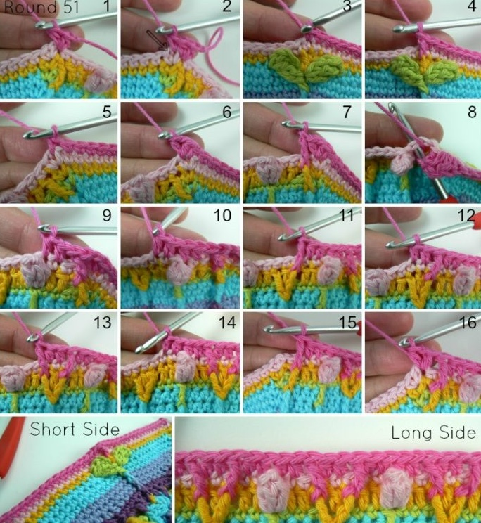
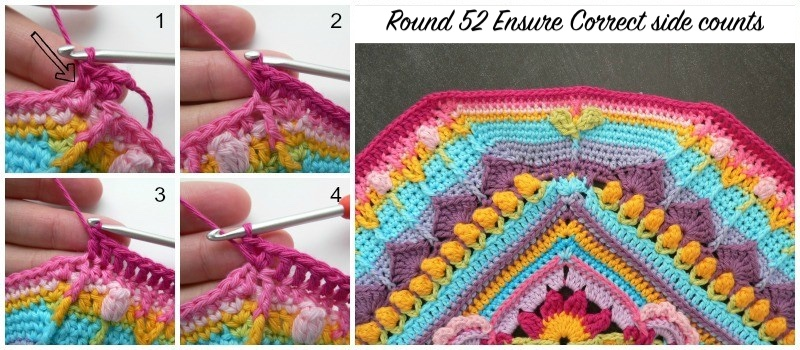
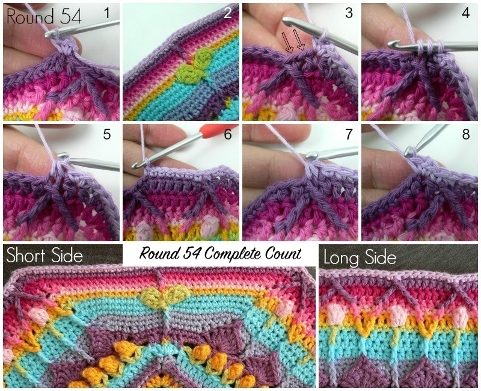
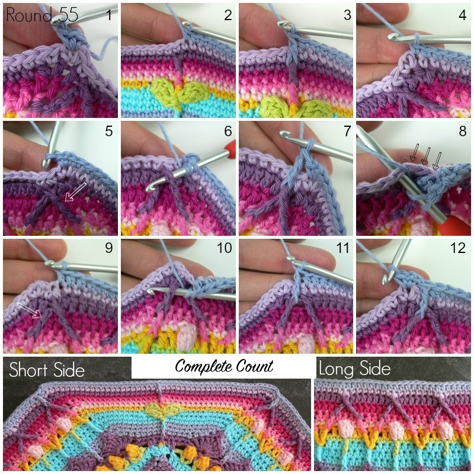
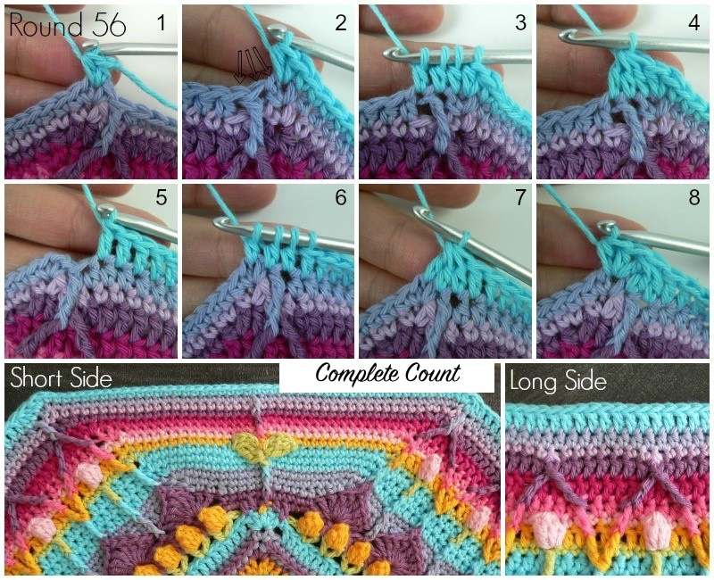
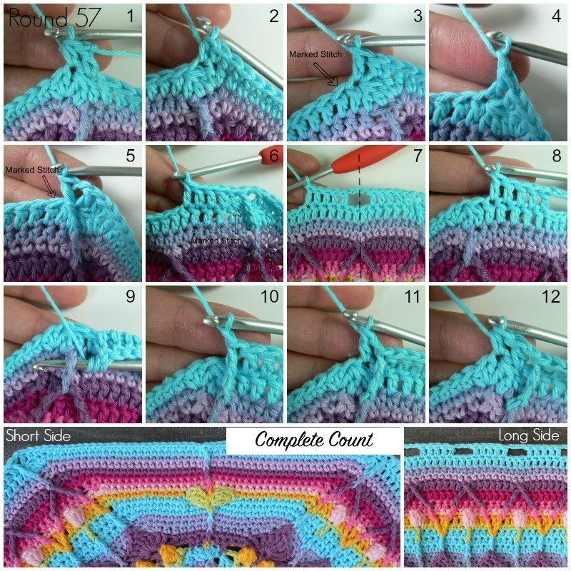
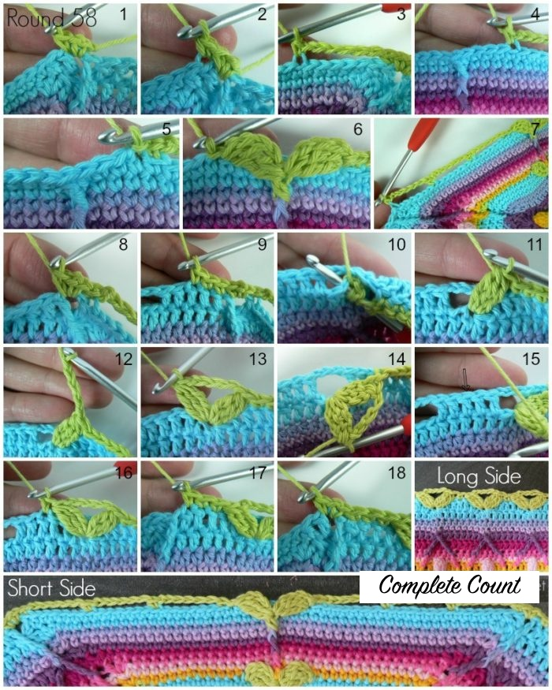
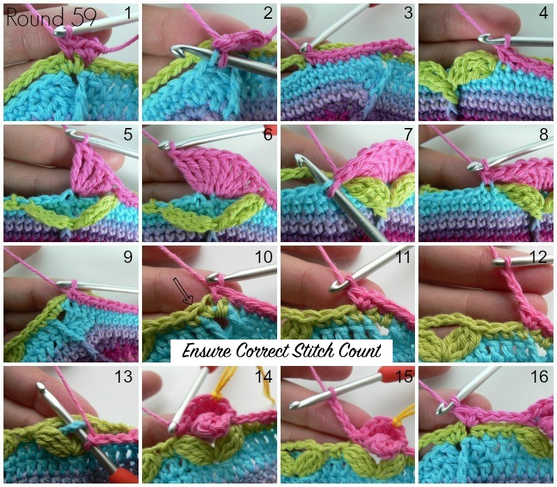
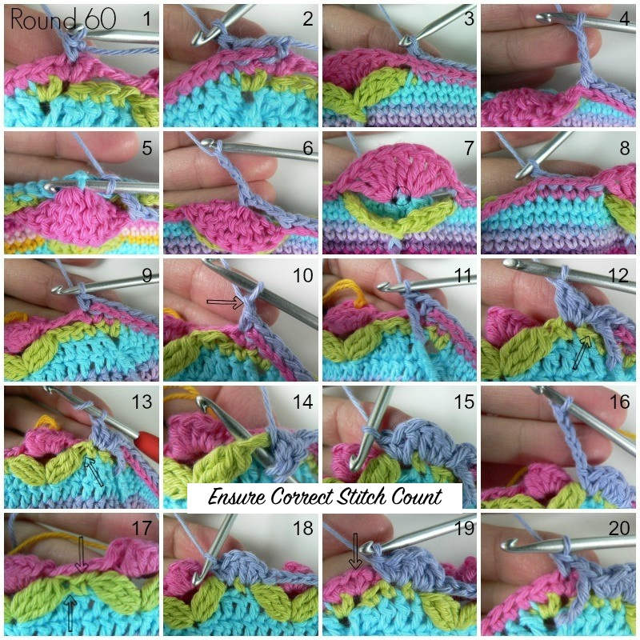
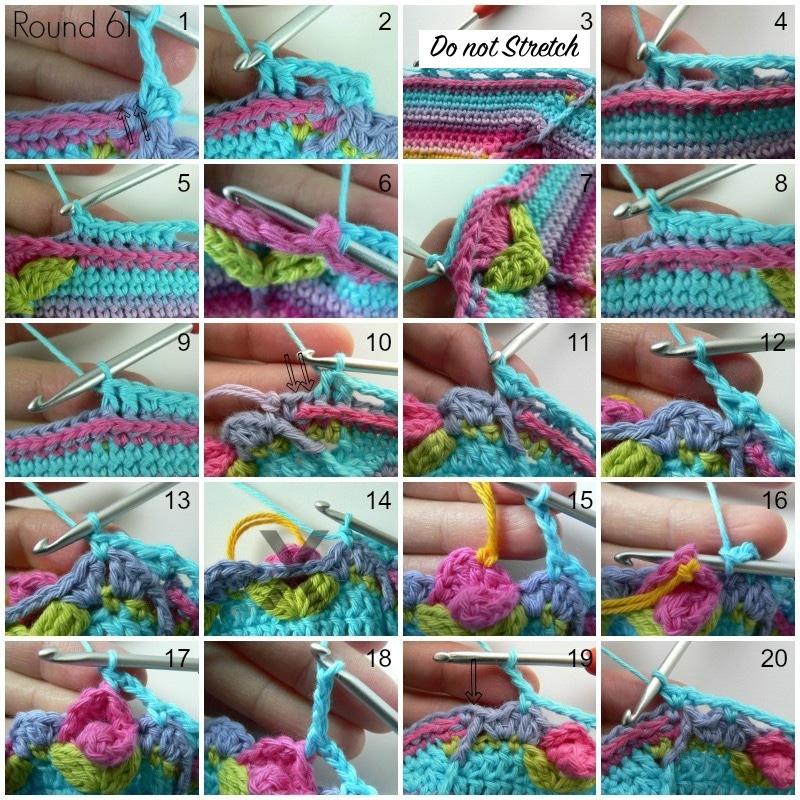

Round 51
When working into the top of the popcorn stitches you will be working into the first dc of the popcorn, through which you pulled the last dc of the popcorn. You will find this stitch immediately to the right of the popcorn (left if you are left-handed).
If you are using the same colour, ch 3 (counts as hdc + ch-1). Hdc in the same stitch. This is your first corner made.
If you are using a new colour, join your yarn by making a standing half-double crochet in the same st as the sl st join. (Ch 1, hdc) in the same stitch. This is your first corner made.
Short Side: Sc in the next ch-1 space. Skip the first (hidden) stitch. Sc in the next 15 sts. Last sc should fall in the sc made into the hdc from Round 49. Fpdc around the hdc between the leaves from Round 49. Sc in the next 15 sts. Skip last st and sc in the next ch-1 space.
Long Side: (Hdc, ch 1, hdc) in the next (hidden) stitch. Make a fptr around the fptr from Round 49. Skip the next 2 sts. Hdc in the next 4 sts. The second hdc should fall in the top of the popcorn stitch.
(Fptr around next fptr from Round 49, skip next st of Round 50, hdc in next 2 sts, Fptr around next fptr from Round 49, skip next st of Round 50, hdc in next 4 sts) 8 times.
Fptr around the next fptr from Round 49, skip next st of Round 50. (Hdc, ch 1, hdc) in the next st (first sc of previous corner). Repeat 3 more times, omitting the last corner. Join to top of beginning ch-3 (or standing hdc) with sl st.
Stitch Counts: Total: 428 sts, 8 ch-1 corner spaces {128 sc, 224 hdc, 4 fpdc, 72 fptr}. Short Side: 35 sts {32 sc, 2 hdc, 1 fpdc}. Long Side: 72 sts {54 hdc, 18 fptr}.
Round 52
If using the same yarn: ch 3 (counts as first hdc + ch-1), hdc in same st (first corner).
If using a new colour: standing hdc in same st as sl st join. (Ch 1, hdc) in same st (first corner).
Short Side: Sc in next ch-1 space, skip first hidden st, sc in next 34 sts. 17th sc falls in top of fpdc from previous round. Sc in next ch-1 space.
Long Side: Skip first hidden st. (Hdc, ch 1, hdc) in next st (fptr from previous round). Dc in next 69 sts. (Hdc, ch 1, hdc) in next st (first hdc of corner from previous round).
Repeat 3 more times, omitting last corner. Join to top of beginning ch-3 with sl st.
Stitch Counts: Total: 436 sts, 8 ch-1 corner spaces {144 sc, 16 hdc, 276 dc}. Short Side: 38 sts {36 sc, 2 hdc}. Long Side: 71 sts {2 hdc, 69 dc}.
Round 53
When making fpdtr’s you will be adding a stitch to each repeat by making 2 and only skipping 1. This round tends to curl; do not worry.
Same colour: ch 3 (hdc + ch-1), hdc in same st (first corner).
New colour: standing hdc in same st as sl st join. (Ch 1, hdc) in same st (first corner).
Short Side: Sc in next ch-1 space, skip first hidden st, sc in next 18 sts, last sc falls in sc made into fpdc from Round 51. Fpdc around fpdc from Round 51, skip next st. Sc in next 18 sts. Sc in next ch-1 space.
Long Side: Skip first hidden st, (hdc, ch 1, hdc) in next st. Skip next st. Dc in next st above popcorn stitch. (Fpdtr left of fptr, fpdtr right of fptr, skip next st of Round 52, dc in next 7 sts) 8 times.
Make fpdtr around last popcorn stitch, skip next st, (hdc, ch 1, hdc) in corner. Repeat 3 more times. Join to top of beginning ch-3 with sl st.
Stitch Counts: Total: 476 sts, 8 ch-1 corners {152 sc, 16 hdc, 232 dc, 4 fpdc, 72 fpdtr}. Short Side: 41 sts {38 sc, 2 hdc, 1 fpdc}. Long Side: 78 sts {2 hdc, 58 dc, 18 fpdtr}.

Round 54
Same colour: (ch 1, sc, ch 1, sc) in same st as sl st join (first corner).
New colour: standing sc in first hdc of corner, (ch 1, sc) in same st.
Short Side: Sc in next ch-1 space, sc in next 41 sts. 21st sc falls in fpdc from Round 53. Sc in next ch-1 space.
Long Side: Skip first hidden st. (Sc, ch 1, sc) in next st. Sc2tog working into 2 fpdtr’s. (Sc in next 7 dc, sc2tog into 2 fpdtr’s) 8 times. Sc in next dc. (Sc, ch 1, sc) in corner.
Repeat 3 more times, omitting last corner. Join to top of first sc with sl st.
Stitch Counts: Total: 452 sc, 8 ch-1 corner spaces. Short Side: 45 sc. Long Side: 68 sc.
Round 55
Same colour: sl st into next ch-1 space, (ch 1, sc, ch 1, sc) in same space (first corner).
New colour: standing sc in ch-1 space, (ch 1, sc) in same space.
Short Side: Sc in next 22 sts. Fpdc around fpdc from Round 53, skip next st of Round 54. Sc in next 22 sts.
Long Side: (Sc, ch 1, sc) in next ch-1 space. Fptr around first fpdtr from Round 53. Skip first hidden st and next 2 sts. Hdc in next 63 sts. Fptr around last fpdtr. (Sc, ch 1, sc) in next ch-1 space.
Repeat 3 more times. Join to first sc with sl st.
Stitch Counts: Total: 456 sts, 8 ch-1 corner spaces {192 sc, 252 hdc, 4 fpdc, 8 fptr}. Short Side: 47 sts {46 sc, 1 fpdc}. Long Side: 67 sts {2 sc, 63 hdc, 2 fptr}.
Round 56
Same colour: sl st into next ch-1 space, ch 2 (counts as hdc), hdc in same ch-1 space (first 2-hdc corner).
New colour: standing hdc in ch-1 space, hdc in same space (first 2-hdc corner).
Short Side: Skip first hidden st. Sc in next 46 sts. 23rd sc falls in fpdc from previous round. Make 2 hdc in next ch-1 space.
Long Side: Make cluster (first hidden sc, fptr, next hdc). Dc in next 62 sts. Last dc falls in hdc before fptr. Make cluster (fptr, next sc, ch-1 space).
Short Side: 2 hdc in ch-1 space, skip first hidden st, sc in next 46 sts. 23rd sc falls in fpdc from previous round. Make 2 hdc in next ch-1 space. Repeat 3 more times. Join to top of beginning ch-2.
Stitch Counts: Total: 456 sts {184 sc, 16 hdc, 248 dc, 8 clusters}. Short Side: 50 sts {46 sc, 4 hdc}. Long Side: 64 sts {62 dc, 2 clusters}.
Round 57
Same colour: standing dc in cluster at end of any long side. Hdc in next st, sc in next 24 sts. Last sc falls in sc you made into fpdc from Round 55. Fpdc around fpdc from Round 55, skip next st. Sc in next 24 sts. Last sc falls in second hdc of 2-hdc corner from previous round. Hdc in next st (cluster). Dc in next st. Long Side: Ch 1, fpdtr around fptr from Round 55, dc in next st (marked), dc in next 4 sts, ch 3, skip next 3 sts, (dc 5 sts, ch 3, skip 3 sts) 6 times. Dc in last 5 dc before cluster. Fpdtr around fptr from Round 55, ch 1. Short Side: Dc in next st (cluster), hdc in next st, sc in next 24 sts. Last sc falls in sc made into fpdc from Round 55. Fpdc around fpdc from Round 55, skip next st. Sc in next 24 sts. Last sc falls in second hdc of 2-hdc corner from previous round. Hdc in next st (cluster), dc in next st.
Repeat 3 more times, omitting last short side on last repeat. Join to top of standing dc. Fasten off.
Stitch Counts: Total: 380 sts, 28 ch-3 spaces, 8 ch-1 corner spaces {192 sc, 8 hdc, 168 dc, 4 fpdc, 8 fpdtr}. Short Side: 53 sts {48 sc, 2 hdc, 2 dc, 1 fpdc}. Long Side: 42 sts, 7 ch-3 spaces {40 dc, 2 fpdtr}.
Round 58 – Leaves
Short Side: (ch 1, sc, ch 1, sc) in sl st join (first corner). Sc in ch-1 space, skip hidden st, (sc in flo of next st, sc in next 6 sts) 3 times. Sc in flo of next st (last before leaf). Behind leaves: skip 2 sts, make 4 tr in next st (sc before fpdc), 4 tr in next st (fpdc). Skip 3 sts behind second leaf. Sc in flo of next st (with blo sc). (Sc in next 6 sts in front of ch-6, sc in next st) 3 times. Skip next st, sc in ch-1 space.
Long Side: Skip first hidden st. (Sc, ch 1, sc) in next st. Ch 3, skip next 3 sts (2 sc and first leaf). Make rose in next ch-3/ch-5 space. (Ch 4, rose in next ch-3/ch-5 space) 6 times. Ch 3, skip next 4 sts (last leaf and next 3 sc). (Sc, ch 1, sc) in next st (first sc of previous corner). Repeat 3 more times, omitting last corner. Join to top of first sc. Fasten off.
Stitch Counts: Total: 260 sts, 8 ch-3 spaces, 24 ch-4 spaces, 8 ch-1 corner spaces {200 sc, 32 tr, 28 roses}. Short Side: 56 sts {48 sc, 8 flo, 8 tr}. Long Side: 9 sts, 2 ch-3 spaces, 6 ch-4 spaces {2 sc, 7 roses}.
Round 59 – Roses and Central Flower on Short Side
Work into ch-3 and ch-5 spaces along long sides, and into Round 57 stitches on short sides.
Rose
- Pull ch-3 space from Round 57 through ch-5 space from Round 58.
- In ch-3 space, make: 2 sc, 3 hdc, 3 dc.
- Bring last stitch around back, join to first sc with sl st (modified popcorn).
- Work (sc, hdc, 3 dc, hdc) into ch-5 space from Round 58 behind modified popcorn.
- Finish rose with sc into ch-3 space from Round 57 in front of ch-5 space.
Follow instructions for short and long sides as detailed above.
Stitch Counts: Total: 260 sts, 8 ch-3 spaces, 24 ch-4 spaces, 8 ch-1 corners {200 sc, 32 tr, 28 roses}.
Round 60
Short Side: bpsc in each of next 24 sc (include first hidden sc), ch 3, bpsc in first 4 tr of 8-tr flower from Round 59, ch 3, skip 8 trs, bpsc in next 24 sc.
Long Side: Sc in ch-1 space, ch 1, fptr around fpdtr from Round 57, skip first hidden st, {sc, hdc, dc} in next sc from Round 58, {sc, hdc, dc} in next 4 sc, {sc, hdc, dc} in next sc. Fptr around next fpdtr. Repeat along long side. (Sc, ch 1, sc) in next corner. Repeat 3 more times. Join to top of first sc. Fasten off.
Stitch Counts: Total: 456 sts {192 sc, 128 hdc, 128 dc, 8 fptr}. Short Side: 57 sts {44 sc, 8 tr, 5 hdc}. Long Side: 67 sts {32 dc, 32 hdc, 3 fptr}.
Round 61 – Final Border
Round 61 finalizes the border with ch-1 corners and sc, hdc, dc repeats along short and long sides. Follow same pattern as Round 60 for placement of roses, tr, fpdc, and sc clusters.
Finish off, weave in ends, and block if necessary.
Stitch Counts: Total: 460 sts {200 sc, 128 hdc, 128 dc, 4 fpdc}. Short Side: 58 sts {46 sc, 6 hdc, 6 tr}. Long Side: 68 sts {64 dc, 4 fpdc}.
